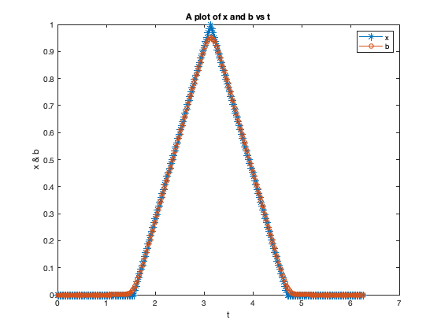
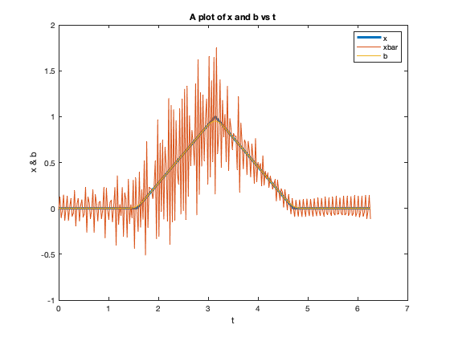
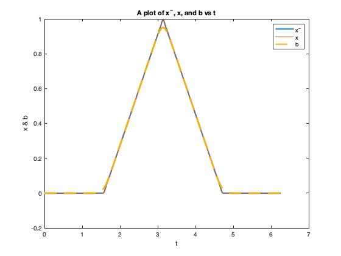
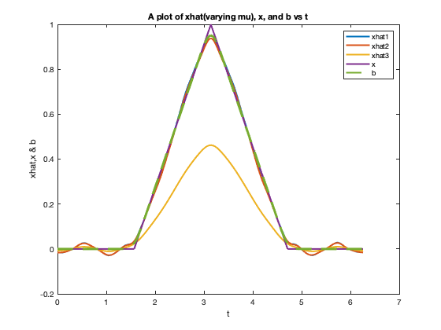
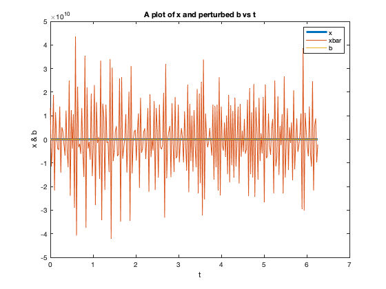
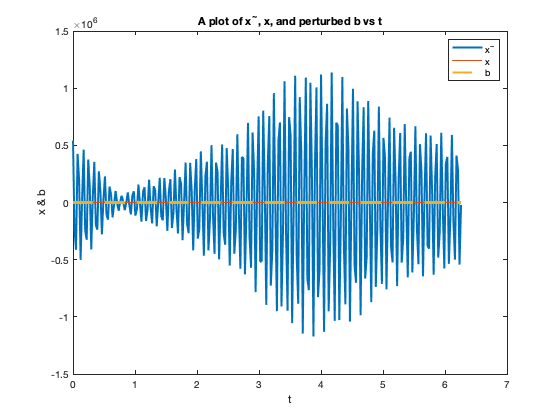
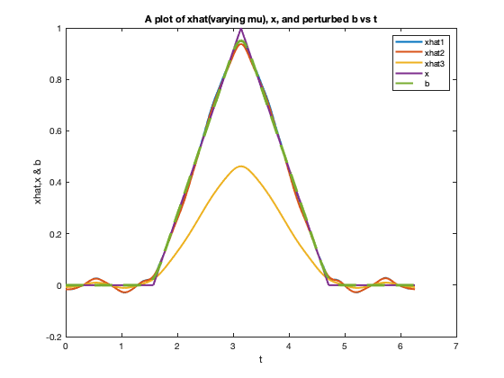

clear all
close all
N = 256;
delta = 0.1;
j = [0:N-1]';
h = 2*pi/N;
tj = h*j;
k = @(t,delta) (1/(delta*sqrt(2*pi)))*exp(-(2-(2*cos(t)))/(2*delta^2));
aj = h*k(tj,delta);
fprintf('2a). Construct A and compute its condition number. \n\n');
A = circulant([aj]);
kapa = cond(A);
fprintf('The condition number of A is: %e \n\n',kapa);
fprintf('2b). Construct vector x. \n\n');
X = zeros(N,1);
for j = 1:N
X(j) = signal(tj(j));
end
b = A*X;
figure(1)
plot(tj,X,'-*')
hold on
plot(tj,b,'-o')
legend('x','b');
xlabel('t'); ylabel('x & b');
title('A plot of x and b vs t');
fprintf('2c). Solve Axbar = b \n\n');
xbar = A\b;
figure(2)
plot(tj,X,'linewidth',3)
hold on
plot(tj,xbar,'linewidth',1)
hold on
plot(tj,b,'linewidth',1)
legend('x','xbar','b');
xlabel('t'); ylabel('x & b');
title('A plot of x and b vs t');
fprintf('xbar doesnot look anything close to x, since A is ill conditioned, xbar has alot of noise. \n \n');
fprintf('2d). Compute a reduced rank least squares solution \n\n');
[u,s,v] = svd(A);
sigma = [];
U = [];
V = [];
for i = 1:N
sig = s(i,i);
if sig >= 1e-12
sigma = [sigma,sig];
U = [U,u(:,i)];
V = [V,v(:,i)];
continue
end
end
xtilda = rls(sigma,U,V,b);
figure(3)
plot(tj,xtilda,'linewidth',2)
hold on
plot(tj,X,'linewidth',1)
hold on
plot(tj,b,'--','linewidth',2)
legend('x^{~}','x','b');
xlabel('t'); ylabel('x & b');
title('A plot of x^{~}, x, and b vs t');
fprintf('The reduced rank least squares solution ,xhat, fits the data much better than xbar. \n\n');
fprintf('2e).Use ridge regression \n\n');
mu1 = 1e-4; mu2 = 1e-2; mu3 = 1;
xhat1 = ridge(mu1,s,u,v,b,N);
xhat2 = ridge(mu2,s,u,v,b,N);
xhat3 = ridge(mu3,s,u,v,b,N);
figure(4)
plot(tj,xhat1,'linewidth',2)
hold on
plot(tj,xhat2,'linewidth',2)
hold on
plot(tj,xhat3,'linewidth',2)
hold on
plot(tj,X,'linewidth',2)
hold on
plot(tj,b,'--','linewidth',2)
legend('xhat1','xhat2','xhat3','x','b');
xlabel('t'); ylabel('xhat,x & b');
title('A plot of xhat(varying mu), x, and b vs t');
fprintf('According to the plot above, the small the value of the regularization parameter the better the \n approximation, as its seen for mu = 1, the solution is completely off.\n\n');
fprintf('Xhat perfomance inturns of approximation depends on parameter, mu, so if we select a good parameter, \n then it approximates better than the rest\n\n');
fprintf('2f). Repeat (c) - (e) by perturbing each entry of b \n\n');
b = b + 1e-5*randn(N,1);
fprintf('Repeated 2c). \n\n');
xbar = A\b;
figure(5)
plot(tj,X,'linewidth',3)
hold on
plot(tj,xbar,'linewidth',1)
hold on
plot(tj,b,'linewidth',1)
legend('x','xbar','b');
xlabel('t'); ylabel('x & b');
title('A plot of x and perturbed b vs t');
fprintf('xbar depicts alot of noise compared to x and b, this is due to the pertubation caused at b')
fprintf('Repeated 2d). Compute a reduced rank least squares solution \n\n');
b = A*X;
b = b + 1e-5*randn(N,1);
xtilda = rls(sigma,U,V,b);
figure(6)
plot(tj,xtilda,'linewidth',2)
hold on
plot(tj,X,'linewidth',1)
hold on
plot(tj,b,'--','linewidth',2)
legend('x^{~}','x','b');
xlabel('t'); ylabel('x & b');
title('A plot of x^{~}, x, and perturbed b vs t');
fprintf('The reduced rank least squares solution ,xhat, also exibits noise as xbar, but in large amplitudes. \n\n');
fprintf('Repeated 2e).Use ridge regression \n\n');
b = A*X;
b = b + 1e-5*randn(N,1);
mu1 = 1e-4; mu2 = 1e-2; mu3 = 1;
xhat1 = ridge(mu1,s,u,v,b,N);
xhat2 = ridge(mu2,s,u,v,b,N);
xhat3 = ridge(mu3,s,u,v,b,N);
figure(7)
plot(tj,xhat1,'linewidth',2)
hold on
plot(tj,xhat2,'linewidth',2)
hold on
plot(tj,xhat3,'linewidth',2)
hold on
plot(tj,X,'linewidth',2)
hold on
plot(tj,b,'--','linewidth',2)
legend('xhat1','xhat2','xhat3','x','b');
xlabel('t'); ylabel('xhat,x & b');
title('A plot of xhat(varying mu), x, and perturbed b vs t');
fprintf('Pertubing b, does not affect xhat, due to obtaining the same plots, before and after perturbing b\n\n');
fprintf('According to the plot above, the small the value of the regularization parameter the better the \n approximation, as its seen for mu = 1, the solution is completely off.\n\n');
fprintf('Xhat perfomance inturns of approximation depends on parameter, mu, so if we select a good parameter, \n then it approximates better than the rest\n\n');
function xhat = ridge(mu,s,u,v,b,N)
xhat = 0;
for j = 1:N
s = diag(s);
xhat = xhat + ((s(j)./((s(j).^2)+mu)).*(u(:,j)'*b)).*v(:,j);
end
end
function xtilda = rls(sigma,U,V,b)
r = length(sigma);
xtilda = 0;
for j = 1:r
xtilda = xtilda + ((U(:,j)'*b)./sigma(j)).*V(:,j);
end
end
function [x] = signal(t)
if abs(t-pi) < pi/2
x = 1 - (2/pi)*abs(t-pi);
else
x = 0;
end
end
2a). Construct A and compute its condition number.
The condition number of A is: 1.144935e+16
2b). Construct vector x.
2c). Solve Axbar = b
Warning: Matrix is close to singular or badly scaled. Results may be
inaccurate. RCOND = 6.559665e-17.
xbar doesnot look anything close to x, since A is ill conditioned, xbar has alot of noise.
2d). Compute a reduced rank least squares solution
The reduced rank least squares solution ,xhat, fits the data much better than xbar.
2e).Use ridge regression
According to the plot above, the small the value of the regularization parameter the better the
approximation, as its seen for mu = 1, the solution is completely off.
Xhat perfomance inturns of approximation depends on parameter, mu, so if we select a good parameter,
then it approximates better than the rest
2f). Repeat (c) - (e) by perturbing each entry of b
Repeated 2c).
Warning: Matrix is close to singular or badly scaled. Results may be
inaccurate. RCOND = 6.559665e-17.
xbar depicts alot of noise compared to x and b, this is due to the pertubation caused at bRepeated 2d). Compute a reduced rank least squares solution
The reduced rank least squares solution ,xhat, also exibits noise as xbar, but in large amplitudes.
Repeated 2e).Use ridge regression
Pertubing b, does not affect xhat, due to obtaining the same plots, before and after perturbing b
According to the plot above, the small the value of the regularization parameter the better the
approximation, as its seen for mu = 1, the solution is completely off.
Xhat perfomance inturns of approximation depends on parameter, mu, so if we select a good parameter,
then it approximates better than the rest
      